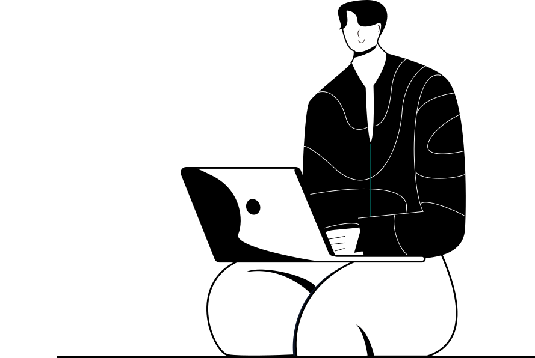
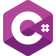
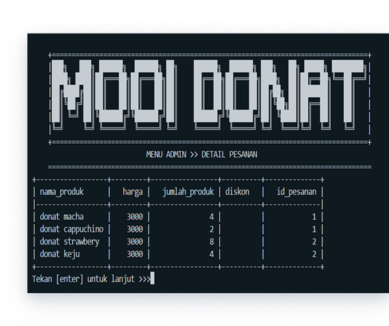

Hello I'am Achmad Surya Winarto
An Information Technology Student.
Setiap pengalaman memiliki cerita. Mulai dari langkah pertama memasuki dunia perkuliahan, beradaptasi dengan lingkungan baru, hingga belajar berbagai hal tentang teknologi informasi. Semua proses ini menjadi bagian dari perjalanan yang ingin terus kuingat dan kembangkan.

My Skills
Postgres
Figma
Python

C#
HTML
CSS

About Me
Halo! Aku Surya, mahasiswa Teknologi Informasi yang sedang memulai perjalanan di dunia teknologi. Website ini menjadi tempat untuk mendokumentasikan proses belajarku, pengalaman organisasi, proyek, dan berbagai hal yang kutemui selama menjalani kehidupan perkuliahan. Bagiku, belajar bukan tentang siapa yang paling cepat,tetapi tentang kemauan untuk terus berkembang dan tidak takut mencoba hal baru.
My Project

01
Kanca-Tani
project OOP C# yang di integrasikan dengan Database juga materi PSQL tingkat lanjut dari materi Semester sebelumnya. Kami mengambil studikasus Koperasi Tani di Desa Krajan, untuk memudahkan dalam estimasi biaya kebutuhan pupuk berdasar luas lahan. Jadi nanti output akan memunculkan haarga dari pupuk dengan jenis tanaman yang dipilih serta ada Waktu Pemupukan.
02
MOOI Donat
project akhir menggunakan Python berbasis Terminal yang di-integrasikan dengan DB Postgres. Kelompok kami mengangkat UMKM sekkitar yakni MOOI DONAT, sebuah toko donat kentang disekitaran kampus dengan tujuan untuk memudahkan proses kerja pencatanan agar lebih terstruktur dan juga proses dari pemesanan hingga pengiriman mudah terpantau oleh owner.

Let's talk for
something special
Always learning, always growing, and always looking for new opportunities to turn ideas into meaningful experiences.